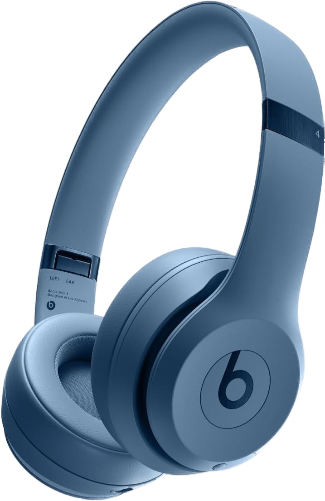

Beat Solo 4
Beats Solo 4 are the latest wireless on-ear headphones from Beats by Dre, designed with an iconic, lightweight, and comfortable design for everyday wear. Equipped with advanced audio technology with custom 40 mm drivers, support Spatial Audio with dynamic head tracking, and can be used in wireless mode via Bluetooth 5.3 or wired via USB-C or 3.5 mm for lossless audio quality.
Spesifikasi
- Baterai super awet hingga 50 jam
- Spatial Audio untuk pengalaman suara imersif
- Bisa dipakai wireless & wired (lossless)
- Desain ringan dan bantalan UltraPlush nyaman
- Fast Fuel charging untuk penggunaan instan